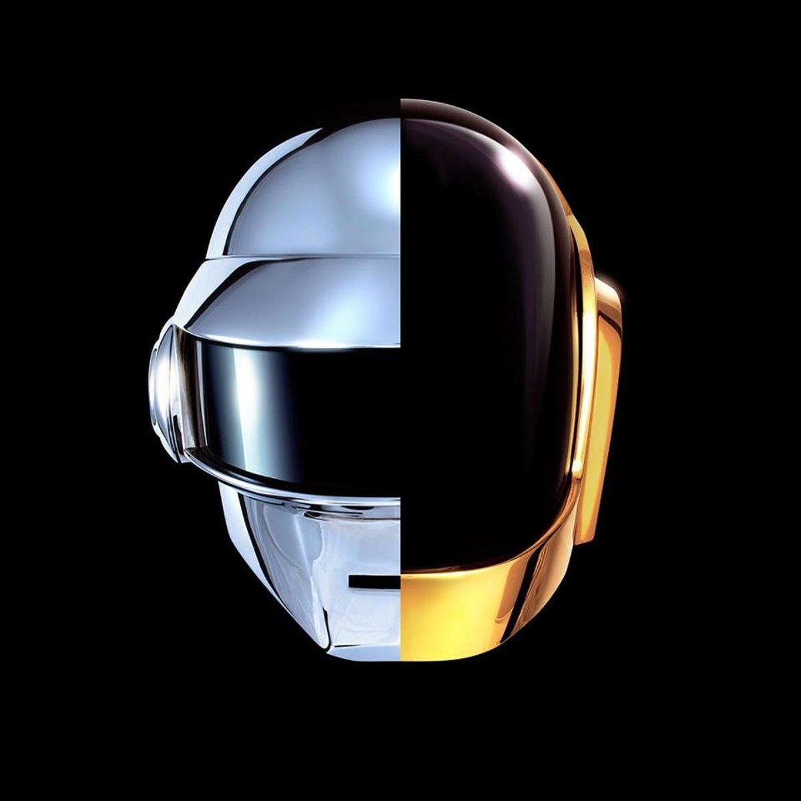
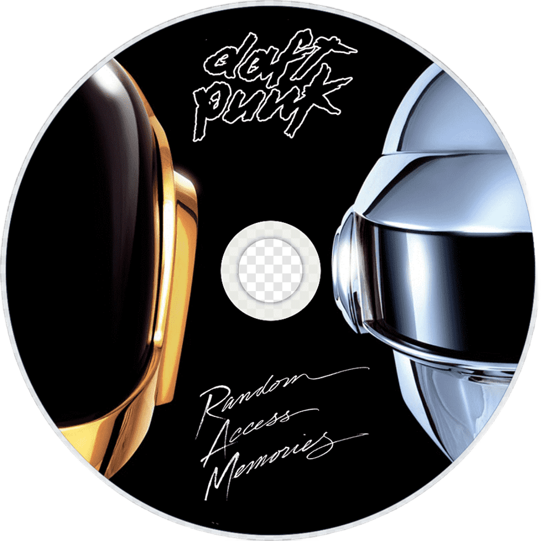

Canciones RAM
- Give Life Back to Music
- The Game of Love
- Giorgio by Moroder
- Within
- Instant Crush (feat. Julian Casablancas)
- Lose Yourself to Dance (feat. Pharrell Williams)
- Touch (feat. Paul Williams)
- Get Lucky (feat. Pharrell Williams and Nile Rodgers)
- Beyond
- Motherboard
- Fragments of Time (feat. Todd Edwards)
- Doin' it Right (feat. Panda Bear)
- Contact

RAM Bot
Reproductor RAM AI Edition

Give Life Back to Music
Daft Punk · Random Access Memories
0:00
0:00